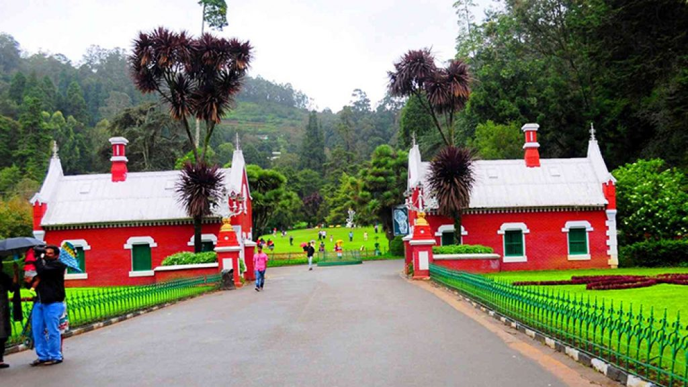

Ooty, the Queen of Hill stations, welcome you with mesmerising meadows, soothing environment, cool weather and a wide array of sightseeing places to visit and admire. Each tourist attraction in Ooty promises a unique and lively experience that will leave you in awe for many days to come. However, if you are wondering what to do in Ooty and what to see in Ooty then have a look at the various sightseeing places that we have mentioned below. With these interesting places to see, you can be sure of having a memorable Ooty tour.
One of the most important parts of every Ooty tour, Ooty lake is indeed a place to visit. nIt is an artificial lake that was built for fishing purposes. This lake is popular for boating. Tourists can be seen enjoying a refreshing ride on its serene waters. There is boating house located near the lake offering a wide array of boats on hire. Cycling by the side of lake is also worth experiencing. There are also a few shops located around the lake, selling various locally made items.